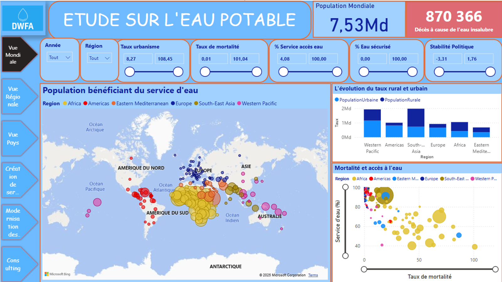
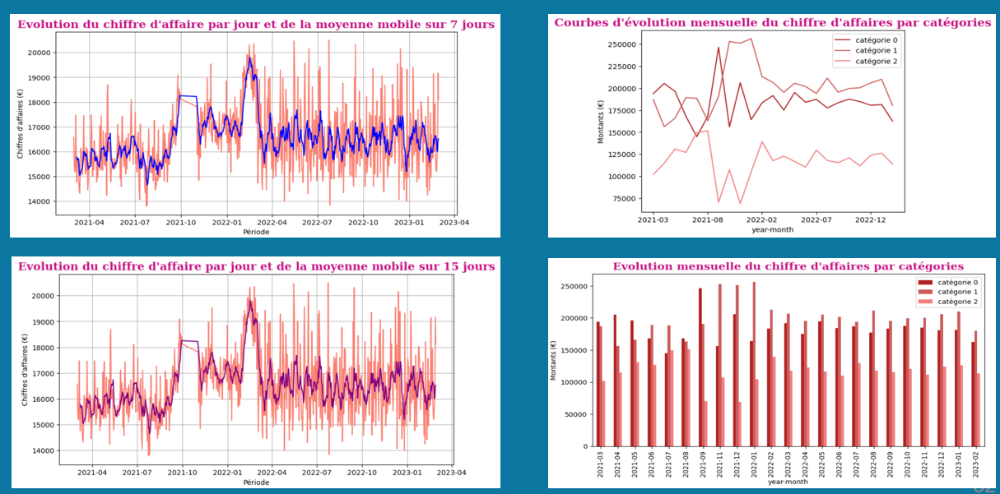
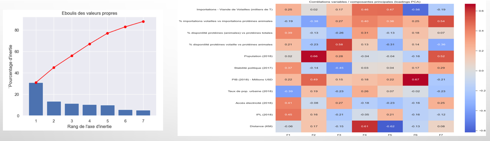
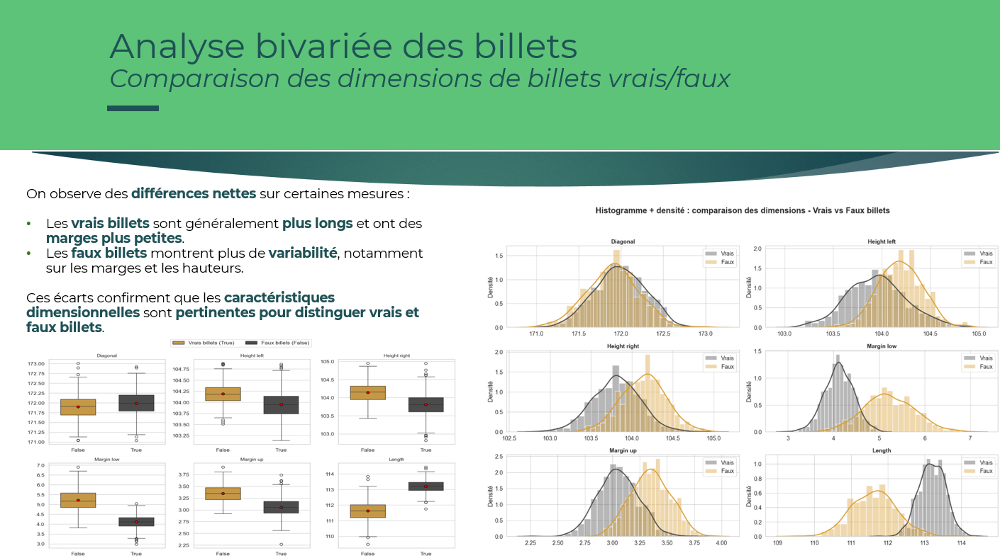

Visuels clés

Dashboard Power BI
Pilotage d’activité, KPIs et dataviz décisionnelle.

Qualité de l’eau potable
Analyse et restitution de données publiques.

Analyse e-commerce
KPIs, tendances et performance commerciale.

Étude de marché (ACP)
Segmentation et analyse multivariée.

Détection de faux billets
Classification et interprétation des modèles.

Base de données immobilière
Modélisation relationnelle et requêtes SQL avancées.